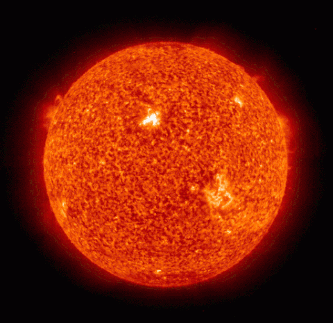
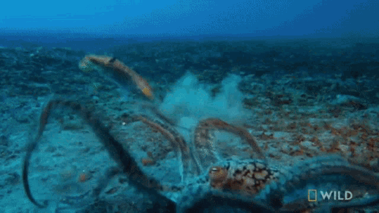
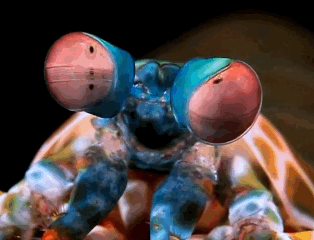
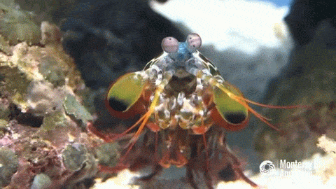

Fatos sobre o Stomatopoda
Informações gerais
- Nome científico: Odontodactylus scyllarus
- Reino: Animalia
- Filo: Arthropoda
- Subfilo: Crustacea
- Classe: Malacostraca
- Subclasse: Hoplocarida
- Ordem: Stomatopoda
O soco com poder do SOL
Seu soco faz com que a água ao seu redor, por um instante, atinja a temperatura da superfície do SOL!
O soco mais forte do universo?
Seu soco é tão forte que se um humano arremessasse uma bola de beisebol um décimo da força do soco do Stomatopoda, seria capaz de fazer com que essa bola entrasse em órbita!
Seus olhos são absurdamente complexos
Os cachorros possuem dois receptores visuais, GB. Nós humanos temos três receptores visuais, RGB (red, green e blue). Borboletas tem incríveis 5 receptores, RGB e outros dois. O Stomatopoda tem fascinantes DEZESSEIS RECEPTORES DIFERENTES. A pergunta que não quer calar é: necessariamente, para que tantos?
Quer saber ainda mais sobre o Stomatopoda?
Esse bichinho é surreal não é mesmo? Se quiser saber mais sobre esse carinha, clique nos links abaixo:
Ir para theOATMEAL em um nova guia Ir para NatGeo em um nova guia Ir para YouTube em uma nova guiaReferências
- TheOATMEAL. Mantis Shrimp. Disponível em: https://theoatmeal.com/comics/mantis_shrimp
- NatGeo. Natures most amazing eyes just got a bit weirder. Disponível em: https://www.nationalgeographic.com/science/article/natures-most-amazing-eyes-just-got-a-bit-weirder
- Wikipédia. Stomatopoda. Disponível em: https://pt.wikipedia.org/wiki/Stomatopoda